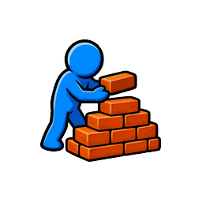

Implementation tracker
Build it in order.
Each checkbox is a real implementation step. When a step ships, check it off here.
Icon Drafts V3
There are three bottom layers: utility buttons, global chat, and the five-button gray navigation bar. Pinned modules stay in their normal spot, duplicate into a pinned shelf, and also appear on a Pinned Activities page.
22
BuildingStamina and skill header ribbon

Stack Bricks
1XP
1Stam
1.49sTime
98%Rate
Stack Bricks
Global chat strip
Page Switch Prototype
This is the final module on a skill page. It only moves sideways to the neighboring skill pages.
More Skills
Jump to a neighboring skill page.
Each button uses the destination page color, not the current page color. The module belongs at the bottom after normal modules and after the pinned shelf.
Main Checklist
-
Use approved UI icons.Sort, Skills, and Pin assets are stored with the game UI assets.Done: approved generated icons are saved in
assets/content/ui/navigation-controls/. -
Find the shared module render paths.Found in
scripts/main.gd: skill detail shell, eager/lazy detail card lists, regular action cards, passive cards, thieving heist cards, fishing area/offers, and hub modules.Done: key entry points include_render_skill_detail,_render_detail_eager_card_list,_render_detail_lazy_card_list,_build_detail_interactive_action_card,_build_passive_module_card,_build_thieving_heist_card,_render_fishing_area_modules,_build_fishing_area_module, and_add_hub_module. -
Define stable module keys.Use internal-ID key families for action, thieving heist, fishing area, fishing offer, and hub modules.Done: added module UI key helpers in
scripts/main.gd. Project validation parsed the change, then failed later on unrelated loading asset and performance gates. -
Add save data for module UI preferences.Store pinned modules as an ordered list, collapsed modules as true flags, and sort mode separately from activity progress.Done: added
module_ui_pinned_order,module_ui_collapsed, andmodule_ui_sort_modesave/restore plumbing inscripts/main.gd. Update: save-normalization validation now covers unlocked-only pin/collapse save filtering, rejected locked/hub pin/collapse mutators leaving runtime state unchanged while clearing stale preview tokens, restore clearing transient armed pin-preview tokens, collapse save migration, invalid sort fallback, and hard-reset preference clearing. Module-list smoke also restores a saved pinned+collapsed module before first render and confirms the skill page rebuilds with an expanded pinned shelf duplicate, a collapsed normal copy, and an expanded Pinned Activities page duplicate. It now also verifies the hard-reset preference clear at render level: no pinned shelf, no collapsed rows, default sort mode, and the reset module back in its normal expanded position. Update: save-normalization now rejects stale unavailable module UI keys across action, hub, thieving heist, fishing offer, and any currently locked fishing-area key available in the fixture, including mutators, saved pin/collapse filtering, stale preview-token cleanup, and restore filtering. Update: save-normalization also asserts full save payloads include the currentmodule_ui_collapse_save_versionplus normalized pin order, collapsed flags, and sort mode so intentional collapses are not mistaken for legacy saves on reload; malformed collapse save-version values are also treated as legacy and migrate to expanded modules. -
Add invisible module action zones.Every unlocked module gets a top-left pin zone and a top-right collapse zone. They do not show buttons until tapped.Done: added shared invisible
pinandcollapseoverlay zones to regular action cards, passive modules, thieving heists, fishing areas, and fishing offers. Update: locked/non-eligible modules now receive no runtime pin/collapse zones, hub modules are filtered out because pinned activities are skill-page activity modules, save-normalization validation asserts locked and hub modules cannot create those zones, activity-card geometry validation checks each zone's configured size, offset, anchor, circle-only hit bounds, rectangular edge points inside the zone boxes but outside the intended circles, and the oversized pin badge staying visual-only outside those circular bounds. Module-list smoke now verifies both the real global action router and a rendered locked activity module: locked cards expose no pin/collapse zone controls, no visible badges, and no top-left/top-right routed action hits. -
Build the pin confirm interaction.Tap the top-left zone once to show a pin for 3 seconds. Tap the pin again to confirm.Done: top-left module zones now show a temporary pin badge, expire it after 3 seconds, and persist confirmed pins into
module_ui_pinned_order. Update: module-list smoke validates the real input path: first top-left tap arms preview only, second tap confirms, neither tap starts the activity underneath, and an expired preview clears both the pin badge and its bury mask. -
Animate confirmed pins into place.After confirmation, the pin anticipates backward, pokes into the module corner, and settles as the permanent pinned badge.Done: confirmed pins now keep the loose armed placement for the first tap, then on confirmation play a 0.24s sequence: tiny up/right prep, quick poke past the settled corner, and a short settle into the embedded top-left placement. The skill-page refresh is delayed until the motion completes, then the existing pin-anchor cover/restore path rebuilds the pinned shelf without exposing a scroll jump. Update:
scripts/test-pinned-pin-visual-smoke.ps1now validates the confirm tween exists, starts from the armed pin, disables the badge during motion, passes through an in-between pose, survives a delayed second-tap window while lazy pruning is active, and settles after refresh. -
Bury the pin tip into the card.The pin has no circle or button background. Its tip visibly tucks under the module surface so it feels physically stuck into the card.Done: the pin badge uses only the pin icon with no circular button background. Update: screenshot review caught the visible colored bury-mask square as unacceptable, so the mask is now kept hidden and validation guards against it coming back. Pin art now uses a 320px placement badge, and smoke validation checks the approved pin texture, no circular stylebox, armed up/right preview position, settled pinned position, no visible square mask, card overlap, top overhang, and settled placement after refresh. Update: the pin visual smoke now uses a portrait phone viewport so capture mode does not launch the game in a landscape/wide layout.
-
Tune the pin poke-in animation.Add a short anticipation beat before the poke-in, then a quick settle so the motion feels intentional.Done: the confirm motion is intentionally snappy rather than slow, with a 45ms prep, 105ms poke, and 90ms settle using the approved oversized pin asset and no circular background. Visual capture was refreshed at
.codex-tmp/pinned-visual-captures/02-confirm-pin-poke-motion.pngand.codex-tmp/pinned-visual-captures/03-settled-pin-and-shelf.png; the mid-motion and settled frames show the pin embedded without a visible square mask. -
Implement Pin as a duplicate shelf.Pinned modules stay in their normal page position and also appear at the top of the current skill column.Done: skill detail pages now render a top Pinned shelf after the top spacer, including Fishing area modules. It duplicates pinned action, passive, thieving heist, fishing area, and fishing offer modules as preview-safe copies so the normal module registry stays intact. Update: the shelf title is centered as
PinnedModuleShelfTitleso the oversized pin badge no longer covers the wordPinned. Update: pin confirmation now captures the normal source module's screen position, inserts the pinned shelf, and compensates scroll after layout so the original module does not visually jump downward; the player can scroll up to see the newly added shelf copy. -
Preserve pin order.Each new pinned module is added after the previously pinned modules. Players can pin as many modules as they want.Done: confirmed pins append to
module_ui_pinned_order, and the shelf iterates that saved array directly without sorting. -
Keep pinned shelf copies expanded.Modules duplicated into the top pinned shelf never render collapsed, even when the normal copy is collapsed.Done: pinned shelf copies are tagged with
module_ui_force_expanded, keep collapse zones removed, and now register as shelf cards under uniquepinned_shelf:keys instead of preview-only copies. Module-list smoke validation checks shelf order, distinct transition keys, shelf action-card starts through the top-level input path, shelf running action cards entering the normal stop-hold route and stopping, all four action info-chip expansions with filled bonus labels on the shelf duplicate, passive collect behavior, thieving heist registration, fishing-area labels and method starts, fishing-offer pin routing, non-empty stat labels, no active collapse zone on shelf copies, no stale registered collapse metadata after duplicate cleanup, and a collapsed source module still renders expanded registered duplicates on both the shelf and pinned page. Update: shelf body taps now prefer the visible shelf card when the oversized original pin graphic overlaps it, while true pin-center taps still yield to normal unpin handling. -
Expire unconfirmed pin previews.If the player does not confirm within 3 seconds, the temporary pin fades away and nothing changes.Done: unconfirmed pin previews schedule a 3-second token-guarded timer that hides the badge and clears preview state without changing the pinned list. Update: module-list smoke validates the real input path by arming a pin preview, waiting past the timeout, and checking that the token clears, the badge hides, and the module remains unpinned.
-
Support one-tap unpin from the badge.When a module is already pinned, tapping the top-left pin zone unpins it. The pin moves out and fades away.Done: pinned badges now remove their key from
module_ui_pinned_order, play a move-out fade, save, and refresh the visible skill detail list. Update: module-list smoke validation now taps the rendered original, pinned shelf, and Pinned Activities page circular pin zones while their visible pin badges are present, plus duplicate pin zones for fishing offers, and confirms each unpins without arming a preview token or starting the activity underneath. The refresh after unpin now waits for the short move-out/fade tween when a visible badge exists, and the smoke verifies the badge starts its tween, remains visible/disabled during fade-out, and visibly moves or fades before the page rebuild. The unpin tween metadata is cleared on finish, the active tween now keeps the TextureButton disabled through the release lifecycle, and fading pins block mid-exit re-taps so they cannot re-pin, arm a preview, or start the card underneath. -
Build the collapse confirm interaction.Tap the top-right zone once to show a minus button. Tap the minus again to collapse the module.Done: top-right module zones now reveal a minus confirm badge. Pressing the minus records the module in
module_ui_collapsed, saves, and refreshes the skill detail list. Update: module-list smoke validates the real input path: first top-right tap shows confirm without collapsing, the visible minus badge center routes as a collapse action even when it sits outside the invisible circle, second tap collapses, and neither tap starts the activity underneath. Update: collapse taps also assert they do not arm a pin-preview token or leave an action-card press stuck. -
Build the collapsed module view.Collapsed modules shrink the blue module panel height into a teeny row while keeping the title and row expansion affordance readable.Done: collapsed normal modules now render as compact themed rows in eager and lazy detail paths, including regular actions, passive modules, thieving heists, fishing areas, and fishing offers. Pinned shelf copies stay expanded. Update: module-list smoke validation checks the compact row height, title label, rounded background, rounded tint, rounded 3D depth slab, rounded border, and minimum compact face height so the collapsed state stays a real card row rather than a flat truncation line.
-
Do not add a collapsed expand button.Collapsed rows keep the existing row-tap expansion behavior; there should be no permanent plus button added for this pinned-activity pass.Done: tracker/demo language now reflects the review decision. The documentation no longer presents a collapsed
+button as a requirement, and production collapsed button UI remains untouched. -
Add the bottom gray navigation bar.Five main navigation buttons sit at the very bottom of the screen below global chat.Done: the existing
nav_baralready implements a bottom-wide gray 5-button ribbon with Hero, Hub, Skills, Settings, and Shop buttons. It sits below the global chat strip and uses the shared_nav_style(). -
Add the utility row above chat.Pinned, Skills, and Sort sit above the global chat strip as three floating buttons. Skills stays in the middle.Done: added a shell-level floating utility row above the global chat strip with Pinned, Skills, and Sort buttons. Skills is centered and returns to the skill hub. Pinned and Sort show temporary messages until their later checklist items are implemented. Safe Godot startup/quit validation passed.
-
Add safe bottom spacing to scroll pages.At max scroll, the final module must not be hidden behind utility buttons, chat, or the gray navigation bar.Done: the shared bottom inset now reserves space for the utility row, its gap, the global chat strip, and the gray nav bar. Skill detail bottom spacers and reward float clamping inherit the larger safe area. Safe Godot startup/quit validation passed.
-
Build the Pinned Activities page.The Pinned button opens a special page containing every pinned module in pin order.Done: the Pinned utility button now opens a dedicated
pinnedscreen. The page renders pinned modules in saved pin order and keeps those page copies expanded by removing collapse zones. Update: toggling Pinned again restores the previous skill page and its detail scroll position, and the Pinned button uses the shared gray active fill while the page is open before returning to its normal fill on the skill page. Module-list smoke now validates cross-skill pinned-page ordering by rendering pinned copies from Fishing, Thieving, and Building in the exact saved pin order. Update: the pinned-page return smoke now opens and closes the page through the actualpinned_utility_tabpressed signal instead of calling the page function directly. -
Render the Pinned Activities header.The pinned page header says Pinned Activities. It does not show a skill XP bar or stamina circle.Done: the pinned page now renders a large centered black
Pinned Activitiestitle using the bold app font and an unboxed centered empty state. Module-list smoke validation confirms the exact empty-state copy, large centered black bold title styling, no shelf panel box, and no source skill XP, stamina, regen, or fishing header gauges in the tree. -
Route pinned modules to normal activity logic.Modules on the pinned page still run their normal costs, timers, rewards, and cooldown rules.Done: pinned-page modules are built with normal action-card registration, their tap viewport uses the pinned scroll container, and the shared card update loop now runs on the pinned screen for live activity progress, costs, timers, rewards, and cooldown state. Update: pinned-page action/passive/heist/fishing-area copies now register under unique page keys while keeping their real activity metadata; smoke validation checks real input-path action starts, running pinned-page action cards entering the normal stop-hold route and stopping, all four action info-chip expansions with filled bonus labels on the pinned duplicate, passive collect buttons clearing the registered module's stored loot and adding log currency on both pinned-page and shelf duplicates, pinned-page passive collect through the same passive button input handler used by live UI, enabled thieving heist button presses applying real trophy success/jail state after clearing stale synthetic gesture suppression, non-empty action/passive/fishing-area labels, pinned fishing method buttons updating their visible duplicate before starting the real fishing action, fishing-offer shelf and pinned-page copies routing their pin zone even though they are not action-card entries, no active/stale collapse route on pinned duplicates, and the oversized pin art stays visual-only outside the circular pin zone so its transparent placement box does not block pinned-page body taps. The module-list smoke now also asserts pinned-page fishing method, heist, and passive collect controls are visible, enabled, pointer-receiving, inside the pinned-page viewport, and clear of the bottom dock before invoking their normal behavior; passive fixtures are seeded to avoid confusing first-time module seeding with failed collection. Thieving heist presses now check the active scroll container for the current screen, so stale skill-page scroll suppression cannot block a Pinned Activities page heist button. Update: pinned-page and pinned-shelf heist buttons now route through
_on_thieving_heist_button_inputpress/release handling instead of direct pressed-signal shortcuts, include the same swipe bookkeeping as passive buttons, and the module-list smoke validates both paths applying real trophy success/jail state. Update: pinned-shelf passive collect now uses_on_passive_module_button_inputpress/release handling in validation too, so shelf and page duplicates both prove the live collect path instead of a direct pressed signal. Update: fishing method buttons now route through_on_fishing_method_button_inputclean tap handling; the pinned-page and pinned-shelf fishing smokes use that live handler and still confirm the visible duplicate selection updates before the real fishing action starts. -
Validate pinned-page action feedback and jail bars.Focused coverage confirms pinned-page actions animate the visible duplicate on start, and pinned thieving action jail bars render and reduce jail time when tapped.Done: added
scripts/test-pinned-page-interactions.ps1with headless validation and optional screenshot capture at.codex-tmp/pinned-page-interactions/pinned-page-jailed-action.png; the captured Pinned Activities page shows the jailed pinned action with bars present. -
Keep mid-list pin and unpin anchored.When a player pins or unpins from a scrolled skill page, the normal source module should stay visually locked in the viewport while shelf space is inserted or removed.Done: pin/unpin refresh now captures only a genuinely visible normal module as the scroll anchor, skips anchoring at the top of the list so the newly inserted pinned shelf remains visible, restores once after visible lazy cards mount, and clears the anchor immediately. Update: removed the multi-frame correction loop because it could fight user scrolling/lazy mounting and cause strobing. Update: pinned skill pages now combine lazy-plan and real-stack bottoms for the max-scroll cap, and lazy pruning now pauses only during the active pin/unpin settle window so the source card and cards above it cannot remount mid-handoff; normal pruning resumes afterward, preserving bottom page-switch access without a giant dead-space tail or flashing lazy remounts. Update: pin-anchor refresh keeps the old detail-page cover active until the anchor restore finishes, bypasses stale generic deferred scroll restores, preserves the active cover from generic clear calls while an anchor is pending, and immediately holds the captured scroll so the old page cannot flash at scroll 0 before the corrected viewport lands. Update: the detail refresh handoff cover now preserves the old page's vertical offset without duplicating its horizontal column offset;
scripts/test-pinned-scroll-anchor.ps1now checks both covered and uncovered per-frame source-module X/Y stability, catching the former 938-to-1874 sideways bump. Addedscripts/test-pinned-scroll-anchor.ps1, which now validates top pin shelf visibility, per-frame mid-scroll pin/unpin X/Y-position stability while covered and uncovered, and bottom clearance after multiple pins including an excessive-dead-space guard. -
Build the Sort menu with level order modes.Active modes for this pass are Level order and Reverse level order. Sorting changes the normal module list but keeps the pinned shelf in pin order.Done: the Sort utility button opens a two-option menu for Level order and Reverse level. The mode is saved, refreshes the visible skill page, reverses normal module order for regular and fishing detail lists, and leaves pinned shelf/page order untouched. Safe Godot startup/quit validation passed.
-
Defer module type sorting.Module type sort waits until module type metadata exists in the game.Done: no module-type option was added to the Sort menu. The only active sort modes are Level order and Reverse level order.
-
Wire the Skills utility button.The Skills button returns to the skill hub from skill pages.Done: the center utility-row Skills button is wired to
_show_skills, matching the existing back-to-skill-hub behavior. -
Define the skill page neighbor order.Use one ring order so every skill page has exactly one previous page and one next page.Done: added
_skill_page_neighbor_ids, which uses the existingskill_defsswipe ring so page-switch buttons and swipe navigation share one previous/next order. Safe Godot startup/quit validation passed. -
Add page switch module to skill pages.The final module on each skill page has two buttons: previous skill and next skill.Done: skill detail pages now add a
PageSwitchModuleimmediately before the bottom spacer. It contains Previous and Next buttons wired through the shared skill selection path. Safe Godot startup/quit validation passed. -
Color page switch buttons by destination.Each button uses the color theme of the page it opens, so players can learn the route visually.Done:
_page_switch_buttonstyles each button with_skill_theme_color(destination_skill_id), including hover and pressed variants. -
Use compact page switch labels.Show the destination skill name plus a tiny Previous page or Next page label.Done: page switch buttons use two-line labels:
Previous pageorNext pageplus the destination skill name. -
Block accidental input behind UI controls.Navigation bar taps, utility-row taps, confirm badges, and expand buttons must not start swipes or press modules underneath.Done: utility buttons, sort menu buttons, page switch buttons, collapse/expand buttons, and pin badges use stopped input or explicit event acceptance. Update: module action hit testing now blocks both invisible circles and visible pin/collapse badges from normal activity-card presses; smoke validation checks pin-zone unpin, fading original/shelf/pinned-page pin re-taps, visible collapse-badge confirm, direct pin-zone and collapse-zone
gui_inputrejecting protected sort-menu coverage while still accepting valid local-zone coordinates, collapsed expand taps and direct collapsed-rowgui_inputrejecting protected sort-menu coverage before direct row local coordinates and a normal expand tap each expand correctly, raw sort-menu/menu-button input not clicking through to cards, dragged pinned-page card presses releasing without a stuck 3D state, Pinned utility press-drag-release clearing its depressed shell state, pinned-shelf presses released over the bottom nav clearing without starting the activity underneath, and no hover tooltip text on live skill/pinned gameplay controls. The pinned-shelf input route now blocks new duplicate-card presses from protected bottom UI while still allowing releases to unwind an existing shelf press. Update: normal, pinned shelf, and pinned page action info-chip taps now validate filled bonus panels, assert the chip tap does not start the underlying activity or leave an action-card press stuck, and clean up expanded panels before the next interaction smoke. Update: pinned-page and pinned-shelf passive info buttons now open non-empty info popovers through the live passive button input path without collecting loot, changing currency, starting an activity underneath, leaving passive press state stuck, or leaving stale popover fade metadata after hide or delayed fade-finish callbacks; passive info and collect release-without-press paths now also verify no stuck passive press state. Update: pinned-page and pinned-shelf passive collect press-drag-release now validate cancellation without collecting stored loot, adding currency, or leaving passive press state stuck. Update: pinned-page and pinned-shelf thieving heist press-drag-release and release-without-press paths now validate cancellation without attempting the heist or leaving heist press metadata stuck. Update: pinned-page and pinned-shelf fishing method press-drag-release and release-without-press paths now validate cancellation without starting the fishing action or leaving fishing method press metadata stuck. Update: oversized pin art is now visual-only outside the top-left circular pin zone, so it can poke into the card without stealing body/info-chip taps; module-list and activity-card-geometry smokes validate the circular pin-zone route and oversized art non-hit behavior. -
Redraw UI states immediately.Pin, unpin, collapse, sort, and pinned page mode update without requiring a restart or page rebuild.Done: confirmed pins and unpins now refresh either the current skill detail list or the Pinned Activities page immediately. Collapse, expand, sort, and pinned-page navigation already trigger visible redraws. Safe Godot startup/quit validation passed.
-
Run project validation.Use
.\scripts\check-project.ps1and follow Godot process safety rules.Done: focused pin/collapse validation is green:test-pinned-pin-visual-smoke.ps1,test-pinned-scroll-anchor.ps1,test-pinned-page-interactions.ps1,test-module-list-transitions.ps1,test-activity-card-geometry.ps1, andtest-save-normalization.ps1all pass throughrun-godot-safe.ps1. Update: the module-list smoke now includes centered shelf-title, no-bump pin-confirm coverage, confirm-poke animation expectations, and visible-source pin/unpin anchoring;.\scripts\test-module-list-transitions.ps1now reportsmodule-list-transitions-ok. Update: the pinned-pin visual smoke validates the approved pin texture, large badge placement, armed up/right preview position, confirm-poke tween, settled pinned position, card intersection, top-left overhang, delayed second-tap confirmation while lazy pruning is active, and no visible square bury mask, with no leftover headless Godot process. Update: after narrowing lazy pruning to the active pin/unpin settle window,test-activity-card-geometry.ps1andtest-save-normalization.ps1were rerun headlessly and still reportactivity-card-geometry-okandsave-normalization-ok. Update:check-project.ps1now runstest-module-list-transitions.ps1,test-pinned-pin-visual-smoke.ps1,test-pinned-scroll-anchor.ps1, andtest-pinned-page-interactions.ps1before the skills-page performance gate; focused pinned checks pass, the previous scroll/thieving mounted-too-many-cards failure is fixed, and the remaining broad performance failure is frame-time spikes in build swipe/rapid-swipe with an occasional scroll/thieving over-120-FPS sample. -
Manual layout pass on a long page.Inspect a long skill page at max scroll and confirm the bottom module, utility row, chat, and navigation bar do not overlap.Done: targeted Godot layout smoke selected a long Thieving page, scrolled to max, and verified the PageSwitchModule stayed visible and clear of the utility row, chat strip, and nav bar. This found and fixed an overlap by adding page-switch height plus clearance to the detail bottom spacer.
-
Manual layout pass on a short page.Confirm badges, collapsed rows, utility row, chat strip, and navigation bar still sit naturally when there is not much page content.Done: targeted Godot layout smoke forced a short Fight page with collapsed modules, verified the collapsed row height was compact, and confirmed the utility row, chat strip, and nav bar were visible and vertically separated.